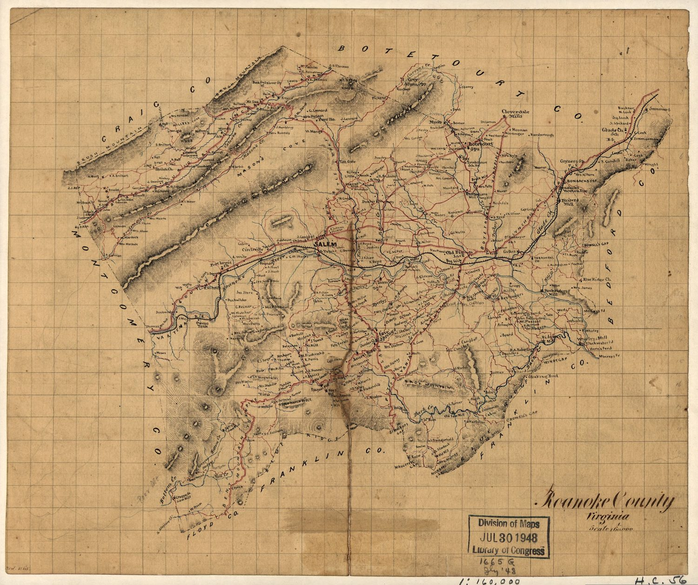

History of the Roanoke Valley
EAST is rooted in a specific place — the Roanoke Valley and the Botetourt County uplands around it. Understanding the valley's history is part of the case for protecting it. This is a plain-language overview, not a textbook.

First peoples
Long before county lines, the Roanoke Valley was home to and traveled by Indigenous peoples, including Siouan-speaking groups such as the Tutelo and Monacan. Salt licks in the valley — the origin of the name "Big Lick" — drew game and people alike, and long trading and travel paths ran through the gap.
- The valley sat along major Indigenous trading/travel routes.
- "Big Lick" refers to the mineral salt licks that later named the settlement.
Frontier settlement & Botetourt County
European settlement pushed up the Great Wagon Road in the 1700s. Botetourt County was formed in 1770, named for Norborne Berkeley, Baron de Botetourt, a colonial governor of Virginia. Greenfield — the tract now at the center of the datacenter fight — was the plantation seat of the prominent Preston family, tying today's fight to some of the county's oldest history.
- Botetourt County established 1770.
- Greenfield was the Preston family plantation — a site of real heritage significance.
The railroad boomtown
In 1882 the sleepy village of Big Lick was chosen as a junction for the Norfolk & Western Railway and renamed Roanoke. It grew so fast it earned the nickname "the Magic City." The railroad made the valley a regional hub — and set the pattern of outside industry reshaping the community that echoes today.
- Big Lick renamed Roanoke in 1882 with the arrival of the railroad.
- Nicknamed "the Magic City" for its explosive growth.
Farms, water & the valley today
Beyond the city, the valley and Botetourt's uplands remain farmland, forest, rivers, and the Blue Ridge. The James and Roanoke rivers, Craig Creek, and the watersheds that feed them are the valley's lifeblood — which is exactly why a development that demands enormous water and power is a community question, not just a zoning one.
- Working farms, forest, and the Blue Ridge still define the county outside the city.
- The rivers and watersheds are why land- and water-use decisions here matter.
More history coming
This section will be expanded with sourced, plain-language detail on:
- The Greenfield plantation and the Preston family
- Enslaved people & surviving slave dwellings (the c.1864 log quarters)
- Moved / relocated historical buildings (kitchen & quarters moved in 2016 for the industrial park)
- Graveyards & cemeteries on and near the site
- Open-source / public-domain maps of the valley over time
See the History expansion plan for scope and sources.
Plain-language overview — names and dates to be verified and sourced before publishing.